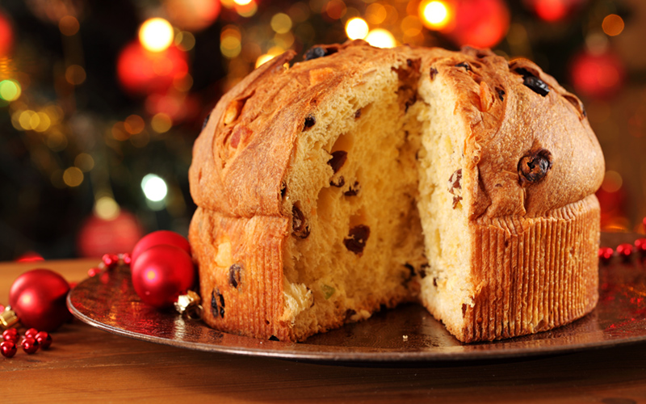

Pizza (Italian way)

Ingredients
- 600ml of warm water
- 1kg of flour, the authentic Italian pizzas use type ‘00’ or ‘doppio zero’ flour which is the finest ground flour available in Italy, if this isn’t readily available to yourselves an all-purpose flour will do the same job
- 6 tablespoons of extra virgin olive oil
- 25g of fresh yeast, or around 8g of dried yeast
- 5 teaspoons of salt
- 2 teaspoons of sugar
- Any toppings you want, the classic authentic toppings would be tomato sauce, oregano or basil, salt, garlic and olive oil, although you can layer your dough with whatever you desire.
How to cook
- Sprinkle the fresh or dried yeast into a bowl filled with warm water. Yeast reacts best with warm water so ensure it isn’t too hot or too cold.
- Pour the flour into a pile on the table and make a groove in the top so the flour resembles a volcano.
- Pour the yeast mixture along with the olive oil, salt and sugar into the groove of the flour.
- Combine all the ingredients by kneading the mixture for 10-15 minutes. Ensure that the surface remains floured throughout the kneading process.
- Grease a bowl with some olive oil and place the ball of dough inside, turning it over once placed to make sure the top of the dough is oiled.
- Cover the bowl and leave to prove for at least four hours. Preheat the oven to around 200°C.
- Remove the dough from the bowl onto your floured surface and punch it down to remove all air bubbles from within the dough.
- Divide the dough into quarters and leave to rest for a few minutes.
- Roll each section into a 12-inch disc, deciding on how thick or thin you would like your crust to be.
- Move the rolled-out dough onto an oiled baking sheet or pan.
- Add tomato sauce and brush the edges of the crust with olive oil and bake for 10 minutes. Many pizzas in Italy are actually pizza Bianca, which means the base has no tomato sauce on it, so if you would prefer it without, then just brush the crust with oil and bake.
- Once the baked crust comes out of the oven, you can then add all your toppings and mozzarella cheese.
- Place the pizza back into the oven until the crust has browned and the cheese has melted. To make sure your pizza is done, check the base to see whether that has browned too.
- Remove the pizza from the oven, garnish with basil leaves and enjoy!
Bottarga pasta
Ingredients
- Kosher salt
- 1/3 cup extra-virgin olive oil
- 4 cloves garlic, lightly crushed
- 1/2 teaspoon red pepper flakes, or to taste
- 1 tablespoon grated bottarga, more to taste
- 12 ounces dry or fresh pasta, such as spaghetti or linguine
- 1/2 cup finely chopped fresh parsley
- 1 lemon, zested and juiced
How to Cook
- Bring a large pot of well salted water to a boil.
- Meanwhile, heat the oil in a large skillet over medium-low heat. Add the garlic and red pepper flakes and cook, stirring frequently, until the garlic is fragrant and golden, 5 to 6 minutes.
- Remove from heat and stir in the bottarga. Set aside.
- Meanwhile, cook the pasta according to package directions
- Drain the pasta, reserving one cup of the pasta cooking water.
- Add the cooked pasta to the bottarga mixture to the skillet and toss to coat.
- Return the skillet to medium heat. Add some of the reserved pasta water, a splash at a time, if the pasta looks dry.
- Toss with half the parsley, the lemon zest, and juice.
- Transfer to a serving platter or individual plates and garnish with the remaining parsley. Serve immediately.
Lasagna

Ingredients
For the meat sauce:
- 2 teaspoons extra virgin olive oil
- 1 pound ground beef chuck
- 1/2 medium onion, diced (about 3/4 cup)
- 1/2 large bell pepper (green, red, or yellow), diced (about 3/4 cup)
- 2 cloves garlic, minced
- 1 (28-ounce)can good-quality tomato sauce
- 3 ounces tomato paste (half a 6-ounce can)
- 1 (14 ounce) can crushed tomatoes
- 2 tablespoons chopped fresh oregano, or 2 teaspoons dried oregano
- 1/4 cup chopped fresh parsley (preferably flat leaf), packed
- 1 tablespoon Italian seasoning
- 1 pinch garlic powder and/or garlic salt
- 1 tablespoon red or white wine vinegar
- 1 tablespoon to 1/4 cup sugar (to taste, optional)
To assemble the lasagna:
- 1/2 pound dry lasagna noodles (requires 9 lasagna noodles - unbroken)
- 15 ounces ricotta cheese
- 1 1/2 pounds (24 ounces) mozzarella cheese, grated or sliced
- 1/4 pound (4 ounces) freshly grated Parmesan cheese
How to cook
- Cook sausage, ground beef, onion, and garlic in a Dutch oven over medium heat until well browned. Stir in crushed tomatoes, tomato sauce, tomato paste, and water. Season with sugar, 2 tablespoons parsley, basil, 1 teaspoon salt, Italian seasoning, fennel seeds, and pepper. Simmer, covered, for about 1 1/2 hours, stirring occasionally.
- Bring a large pot of lightly salted water to a boil. Cook lasagna noodles in boiling water for 8 to 10 minutes. Drain noodles, and rinse with cold water. In a mixing bowl, combine ricotta cheese with egg, remaining 2 tablespoons parsley, and 1/2 teaspoon salt.
- Preheat the oven to 375 degrees F (190 degrees C).
- To assemble, spread 1 1/2 cups of meat sauce in the bottom of a 9x13-inch baking dish. Arrange 6 noodles lengthwise over meat sauce. Spread with 1/2 of the ricotta cheese mixture. Top with 1/3 of the mozzarella cheese slices. Spoon 1 1/2 cups meat sauce over mozzarella, and sprinkle with 1/4 cup Parmesan cheese. Repeat layers, and top with remaining mozzarella and Parmesan cheese. Cover with foil: to prevent sticking, either spray foil with cooking spray or make sure the foil does not touch the cheese.
- Bake in the preheated oven for 25 minutes. Remove the foil and bake for an additional 25 minutes. Rest lasagna for 15 minutes before serving.
Fiorentina steak
Ingredients
- 1 kg T-bone steak , 5cm thick
- 1 kg red-skinned potatoes
- 1 bulb of garlic
- 3 sprigs of fresh rosemary
- SALSA VERDE
- 1 bunch of fresh mint , (30g)
- 1 bunch of fresh flat-leaf parsley , (30g)
- 1 bunch of fresh basil , (30g)
- 2 tablespoons capers in brine
- 2 gherkins
- 2 anchovy fillets in oil , from sustainable sources
- 2 tablespoons red wine vinegar
- 2 teaspoons Dijon mustard
- extra virgin olive oil
How to Cook
- Wash the potatoes and cut into 3cm chunks. Parboil in a pan of boiling salted water with the whole unpeeled garlic cloves for 8 minutes.
- Meanwhile, trim the fat on the steak to 1cm thick and put the steak aside. Finely chop the fat offcuts, place in a large cold frying pan and put on a medium-high heat to render the fat. Once sizzling, drain and add the potatoes and garlic. Cook for 30 minutes, or until golden and crisp, stirring occasionally. Strip in the rosemary leaves for the last 2 minutes, then leave on the lowest heat.
- Meanwhile, put a separate cold, non-stick frying pan on a medium-high heat and use tongs to hold the steak fat edge down for 6 minutes to render the fat and get it dark golden. Turn on to the bone edge for another 6 minutes to heat the bone. Now, gently turn the steak on to one of its flat sides. Cook for 6 minutes on each flat side (or 8 minutes for medium-rare). Remove to a board, cover, and rest, pouring pan juices over the potatoes.
- Pick the mint, parsley and basil leaves into a food processor. Pulse, then add the rest of the salsa verde ingredients with 8 tablespoons of oil. Blitz to your desired consistency, then taste and season to perfection.
- Carve and season the steak at the table, serving it with the crispy spuds and salsa verde alongside. Squeeze the sweet garlic out of its skins and enjoy.
Risotto (mushroom)
Ingredients
- 6 cups chicken broth, or as needed
- 3 tablespoons olive oil, divided
- 1 pound portobello mushrooms, thinly sliced
- 1 pound white mushrooms, thinly sliced
- 2 medium shallots, diced
- 1 ½ cups Arborio rice
- ½ cup dry white wine
- 4 tablespoons butter
- 3 tablespoons finely chopped chives
- ⅓ cup freshly grated Parmesan cheese
- sea salt and freshly ground black pepper to taste
How to cook
- Warm broth in a saucepan over low heat.
- Meanwhile, warm 2 tablespoons olive oil in a large saucepan over medium-high heat. Add portobello and white mushrooms; cook and stir until soft, about 3 minutes. Remove mushrooms and their liquid to a bowl; set aside.
- Add remaining 1 tablespoon olive oil to the saucepan. Stir in shallots and cook for 1 minute. Add rice; cook and stir until rice is coated with oil and pale, golden in color, about 2 minutes.
- Pour in wine, stirring constantly until wine is fully absorbed. Add 1/2 cup warm broth to the rice, and stir until the broth is absorbed. Continue adding broth, 1/2 cup at a time, stirring constantly, until the liquid is absorbed and the rice is tender, yet firm to the bite, about 15 to 20 minutes.
- Remove from heat. Stir in reserved mushrooms and their liquid, butter, chives, and Parmesan cheese. Season with salt and pepper and serve immediately.
Italy Traditional Desserts
Tiramisu
Ingredients
- 6 large egg yolks
- ¾ cup white sugar
- ⅔ cup milk
- 1 ¼ cups heavy cream
- ½ teaspoon vanilla extract
- 1 pound mascarpone cheese, at room temperature
- ¼ cup strong brewed coffee, at room temperature
- 2 tablespoons rum
- 2 (3 ounce) packages ladyfinger cookies
- 1 tablespoon unsweetened cocoa powder
How to make
- Whisk together egg yolks and sugar in a medium saucepan until well blended. Whisk in milk and cook over medium heat, stirring constantly, until mixture comes to a boil.
- Boil gently for 1 minute, then remove from the heat and allow to cool slightly.
- Cover tightly and chill in the refrigerator for 1 hour.
- Beat cream and vanilla in a medium bowl with an electric mixer until stiff peaks form.
- Remove egg yolk mixture from the refrigerator; add mascarpone cheese and whisk until smooth.
- Combine coffee and rum in a small bowl. Split ladyfingers in half lengthwise and drizzle with the coffee mixture.
- Arrange 1/2 of the soaked ladyfingers in the bottom of a 7x11-inch dish. Spread 1/2 of the mascarpone mixture over the ladyfingers, then spread 1/2 of the whipped cream over top. Repeat layers once more. Sprinkle cocoa powder over top.
- Cover and refrigerate until set, 4 to 6 hours.
Panettone

Ingredients
- 4 tbsp warm milk
- 1 x 7g sachet fast-action dried yeast
- 150g caster sugar
- 250g butter, softened
- 5 medium eggs, lightly beaten
- 2 tsp vanilla extract
- grated zest of 1 lemon
- grated zest of 1 orange
- 550g strong white bread flour, plus extra for dusting
- 80g raisins
- 80g sultanas
- 3 tbsp dark rum
- 100g good-quality candied lemon and orange peel, finely chopped
For the topping
- 30g whole blanched almonds, roughly chopped
- 1 tbsp caster sugar
- 1 tbsp egg white
- 1 tbsp icing sugar
How to make
- Grease a panettone tin (see Tip) or a 20cm deep cake tin, or use a panettone case.
- Place the warm milk in a bowl and add the yeast and 1 tsp of sugar and leave for a few minutes.
- Put the remaining sugar in a large bowl and beat together with the butter and vanilla extract until really light, creamy and pale.
- Stir in the lemon and orange zest. Add the eggs a little at a time until all are well incorporated. Spoon in a tablespoon of the flour if the mixture starts to curdle and beat this in with the eggs.
- Place the flour in a large bowl and mix with a good pinch of salt and make a well in the centre. Add the yeast mixture then the butter and egg mixture, folding in with a large spoon to make a soft dough. Knead for 5 mins in the bowl until it all starts to come together. It will be a pretty sticky dough at this stage.
- Turn out the dough onto a floured surface and knead for a further 10 mins, until everything has come together and you have a very soft and stretchy dough. Add a light sprinkling of flour to the surface and your hands as you go to stop the mixture sticking, but try not to add too much. Place in a lightly greased bowl and cover. Place in the fridge overnight to prove.
- Place the raisins and sultanas in a small saucepan with the rum and heat gently for 5 – 7 mins until the fruit has absorbed the liquid and is plump and juicy. Set aside to cool.
- When the dough is risen, tip it out onto a lightly floured surface and knead for another 5 mins. Gradually knead in the soaked raisins, sultanas and chopped candied peel. Shape the dough into a ball and pop into the prepared tin. If using a 20cm cake tin, wrap a layer of baking parchment around the outside of the tin, to come up about 5cm above the rim, and secure the paper with string. This will help contain the dough as it rises. Cover lightly with cling film and leave to rise for 3-4 hours depending on your room temperature, until it has doubled in size.
- Preheat the oven to 180C/fan 160C/gas 4. Adjust the oven shelf to the right height. Mix together the almonds, caster sugar and egg white for the topping and gently brush over the top of the panettone. Place in the oven and bake for 40 - 50 mins until golden and risen and a skewer comes out clean when inserted into the middle of the cake. Leave to cool in the tin for 10 mins before turning out onto a wire rack. Leave to cool completely before dusting lightly with icing sugar and cutting into wedges to serve.
Cannoli Sicilian
Ingredients
FOR THE SHELLS
- 200 g (7 oz) of “00” flour
- 1 teaspoon of unsweetened cocoa powder
- 1 teaspoon of cinnamon powder
- 20 g (0,7 oz) of softened lard or butter
- 1 teaspoon of coffee powder (optional)
- 35 g (1,2 oz) of icing sugar
- 1 teaspoon of fine salt
- 1 egg of about 50 g (1,7 oz)
- 50 ml of Marsala wine
- plenty of peanut oil (for frying)
FOR THE FILLING
- 500 g (18 oz) sheep’s milk ricotta
- 180 g (6 oz) of white sugar
- 60 g (2 oz) of dark chocolate drops
- chopped pistachios, candied fruit and icing sugar for decoration
How to make
- Start making Sicilian cannoli recipe by placing the flour in a large bowl.
- Add acing sugar, cinnamon, unsweetened cocoa powder, coffee powder and fine salt.
- Mix with a wooden spoon then add lard or butter (at room temperature), depending on what you have chosen as an ingredient.
- Add the egg and stir, mixing the ingredients.
- Finally add the masala wine then with your hands begin to knead the ingredients.
- Wrap it in a kitchen film, then let it rest in the fridge for about 30 minutes.
- Now take out the Sicilian cannoli dough from the fridge and roll it out with a rolling pin up to a thickness of about 3 mm, then, with a pastry ring (or a cup) of 10 or 12 cm (4 or 5 inch) in diameter , make some cannoli disks.
- Gently remove the disc from the work surface and wrap it around the cannoli tube.
- Wet the ends of the disk with a little cold water and press well to close it. This will prevent the cannoli from opening during cooking.
- Fry the cannoli for one or two minutes in plenty of peanut oil. As soon as the dough becomes golden, remove from the oil, drain on paper towels, and let cool. Finally remove the cannoli from the tubes.
- Place the ricotta in a bowl and add the sugar then stir and mix the two ingredients.
- Now add the chocolate drops, mix well and store in the fridge till the moment to serve.
- Let’s start with filling a pastry bag with the ricotta and chocolate cream
- Take the cannoli (which in the meantime you will have kept at room temperature) and fill them with cream with the help of the pastry bag, Then decorate them with chopped pistachios
- Place the Sicilian cannoli in a serving dish, sprinkle with icing sugar and serve.